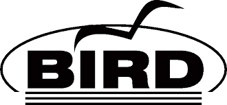

Profile
Name
John Mark Gabriel Caguicla
Current Employment
IT Engineer
nepes hayyim Corporation
Work
Monde Nissin Corporation
IT Developer
2018 - 2019
nepes hayyim Corporation
IT Engineer
2019 - Present
Technologies
.NET
C#
RosettaNet
Dynamics 365 Business Central
SECS/GEM
Full-Stack Web Development
JavaScript
NodeJS
Golang
C++
Networking
BGP
Projects
 jsnodejsbotdiscordarchived
jsnodejsbotdiscordarchivedYotsugi
Personal
A Discord bot that handles a few basic tasks like querying from imageboards
No Image
transliterationdotnetc#activeWanaKanaSharp
Personal
A Japanese text (Romaji ⇄ Hiragana ⇄ Katakana) transliteration library inspired by WanaKana
No Image
jsnodejswebarchivedWaste Collection Tracker
Personal
A mobile web-based application for a client to track amount, location and signoffs during routing waste collection
No Image
infranixosactiveGuarandoo
Personal
Personal infrastructure powering most of my self hosted services, majority of the servers are running NixOS
- cppbgpactive
BIRD2
Personal
A set of BIRD2 patches which provide new functionality (e.g. webhooks) done as experiments
No Image
networkingbgpactiveGuarandoo
Personal
AS number 200866 running on a primarily IPv6-stack powering the Guarandoo infrastructure
No Image
networkingbgpactiveGuarandoo Labs
Personal
AS number 199501 used for research and development of Guarandoo networks